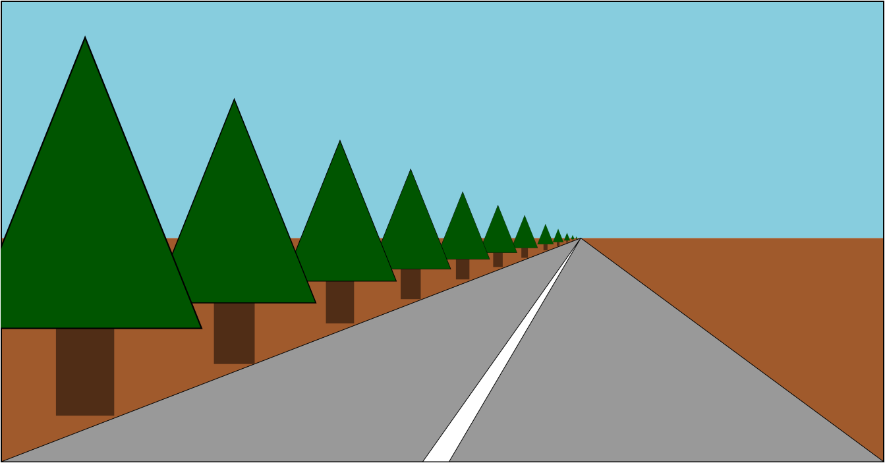
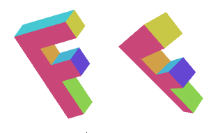
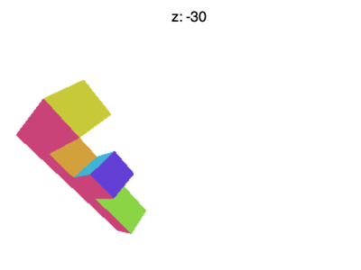
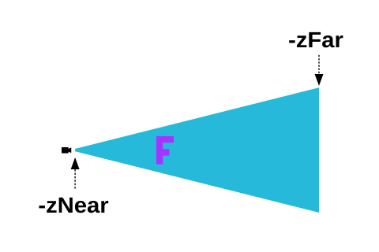

Cet article fait partie d’une série d’articles sur WebGL. Le premier a commencé par les fondamentaux et le précédent portait sur les bases de la 3D. Si vous ne les avez pas lus, veuillez les consulter en premier.
Dans le dernier article, nous avons vu comment faire de la 3D, mais cette 3D n’avait aucune perspective. Elle utilisait ce qu’on appelle une vue “orthographique” qui a son utilité, mais ce n’est généralement pas ce que les gens veulent quand ils disent “3D”.
Au lieu de cela, nous devons ajouter la perspective. Qu’est-ce que la perspective exactement ? C’est essentiellement la caractéristique selon laquelle les choses qui sont plus éloignées apparaissent plus petites.

En regardant l’exemple ci-dessus, nous voyons que les choses plus éloignées sont dessinées plus petites. Étant donné notre exemple actuel, une façon simple de faire en sorte que les choses plus éloignées apparaissent plus petites serait de diviser X et Y de l’espace de découpage par Z.
Pensez-y de cette façon : Si vous avez une ligne de (10, 15) à (20,15), elle fait 10 unités de long. Dans notre exemple actuel, elle serait dessinée sur 10 pixels de long. Mais si nous divisons par Z, par exemple si Z vaut 1
10 / 1 = 10 20 / 1 = 20 abs(10-20) = 10
elle ferait 10 pixels de long. Si Z vaut 2, elle ferait
10 / 2 = 5 20 / 2 = 10 abs(5 - 10) = 5
5 pixels de long. À Z = 3, elle ferait
10 / 3 = 3.333 20 / 3 = 6.666 abs(3.333 - 6.666) = 3.333
Vous pouvez voir qu’à mesure que Z augmente, à mesure qu’il s’éloigne, nous finirons par le dessiner plus petit. Si nous divisons dans l’espace de découpage, nous pourrions obtenir de meilleurs résultats car Z sera un nombre plus petit (-1 à +1). Si nous ajoutons un facteur d’ajustement pour multiplier Z avant de diviser, nous pouvons ajuster à quel point les choses deviennent plus petites pour une distance donnée.
Essayons. D’abord, changeons le shader de sommet pour diviser par Z après l’avoir multiplié par notre “facteur d’ajustement”.
...
+uniform float u_fudgeFactor;
...
void main() {
// Multiplie la position par la matrice.
* vec4 position = u_matrix * a_position;
// Ajuste le z par lequel diviser
+ float zToDivideBy = 1.0 + position.z * u_fudgeFactor;
// Divise x et y par z.
* gl_Position = vec4(position.xy / zToDivideBy, position.zw);
}
Notez que, comme Z dans l’espace de découpage va de -1 à +1, j’ai ajouté 1 pour obtenir
zToDivideBy allant de 0 à +2 * fudgeFactor
Nous devons également mettre à jour le code pour nous permettre de définir le fudgeFactor.
...
+ var fudgeLocation = gl.getUniformLocation(program, "u_fudgeFactor");
...
+ var fudgeFactor = 1;
...
function drawScene() {
...
+ // Définit le fudgeFactor
+ gl.uniform1f(fudgeLocation, fudgeFactor);
// Dessine la géométrie.
gl.drawArrays(gl.TRIANGLES, 0, 16 * 6);
Et voici le résultat.
Si ce n’est pas clair, faites glisser le curseur “fudgeFactor” de 1.0 à 0.0 pour voir à quoi ressemblaient les choses avant que nous ajoutions notre code de division par Z.

Il s’avère que WebGL prend la valeur x,y,z,w que nous assignons à gl_Position dans notre shader
de sommet et la divise automatiquement par w.
Nous pouvons le prouver très facilement en changeant le shader et au lieu de faire la
division nous-mêmes, en mettant zToDivideBy dans gl_Position.w.
...
uniform float u_fudgeFactor;
...
void main() {
// Multiplie la position par la matrice.
vec4 position = u_matrix * a_position;
// Ajuste le z par lequel diviser
float zToDivideBy = 1.0 + position.z * u_fudgeFactor;
// Divise x, y et z par zToDivideBy
gl_Position = vec4(position.xyz, zToDivideBy);
}
et voir que c’est exactement pareil.
Pourquoi le fait que WebGL divise automatiquement par W est-il utile ? Parce que maintenant, en utilisant plus de magie matricielle, nous pouvons simplement utiliser encore une autre matrice pour copier z dans w.
Une matrice comme celle-ci
1, 0, 0, 0, 0, 1, 0, 0, 0, 0, 1, 1, 0, 0, 0, 0,
copiera z dans w. Vous pouvez regarder chacune de ces colonnes comme
x_out = x_in * 1 +
y_in * 0 +
z_in * 0 +
w_in * 0 ;
y_out = x_in * 0 +
y_in * 1 +
z_in * 0 +
w_in * 0 ;
z_out = x_in * 0 +
y_in * 0 +
z_in * 1 +
w_in * 0 ;
w_out = x_in * 0 +
y_in * 0 +
z_in * 1 +
w_in * 0 ;
ce qui, une fois simplifié, donne
x_out = x_in; y_out = y_in; z_out = z_in; w_out = z_in;
Nous pouvons ajouter le plus 1 que nous avions avant avec cette matrice puisque nous savons que w_in vaut toujours 1.0.
1, 0, 0, 0, 0, 1, 0, 0, 0, 0, 1, 1, 0, 0, 0, 1,
cela changera le calcul de W en
w_out = x_in * 0 +
y_in * 0 +
z_in * 1 +
w_in * 1 ;
et puisque nous savons que w_in = 1.0, alors c’est vraiment
w_out = z_in + 1;
Enfin, nous pouvons réintégrer notre fudgeFactor si la matrice est celle-ci
1, 0, 0, 0, 0, 1, 0, 0, 0, 0, 1, fudgeFactor, 0, 0, 0, 1,
ce qui signifie
w_out = x_in * 0 +
y_in * 0 +
z_in * fudgeFactor +
w_in * 1 ;
et simplifié, c’est
w_out = z_in * fudgeFactor + 1;
Donc, modifions à nouveau le programme pour utiliser simplement des matrices.
D’abord, remettons le shader de sommet. Il est à nouveau simple
uniform mat4 u_matrix;
void main() {
// Multiplie la position par la matrice.
gl_Position = u_matrix * a_position;
...
}
Ensuite, créons une fonction pour créer notre matrice Z → W.
function makeZToWMatrix(fudgeFactor) {
return [
1, 0, 0, 0,
0, 1, 0, 0,
0, 0, 1, fudgeFactor,
0, 0, 0, 1,
];
}
et nous changerons le code pour l’utiliser.
...
// Calcule la matrice
+ var matrix = makeZToWMatrix(fudgeFactor);
* matrix = m4.multiply(matrix, m4.projection(gl.canvas.clientWidth, gl.canvas.clientHeight, 400));
matrix = m4.translate(matrix, translation[0], translation[1], translation[2]);
matrix = m4.xRotate(matrix, rotation[0]);
matrix = m4.yRotate(matrix, rotation[1]);
matrix = m4.zRotate(matrix, rotation[2]);
matrix = m4.scale(matrix, scale[0], scale[1], scale[2]);
...
et notez, encore une fois, c’est exactement pareil.
Tout cela était essentiellement juste pour vous montrer que diviser par Z nous donne la perspective et que WebGL fait commodément cette division par Z pour nous.
Mais il y a encore quelques problèmes. Par exemple, si vous définissez Z à environ -100, vous verrez quelque chose comme l’animation ci-dessous

Que se passe-t-il ? Pourquoi le F disparaît-il prématurément ? Tout comme WebGL découpe X et Y aux valeurs entre +1 et -1, il découpe également Z. Ce que nous voyons ici, c’est où Z < -1.
Je pourrais entrer dans les détails des mathématiques pour corriger cela, mais vous pouvez le dériver de la même manière que nous l’avons fait pour la projection 2D. Nous devons prendre Z, ajouter une certaine quantité et mettre à l’échelle une certaine quantité, et nous pouvons faire en sorte que n’importe quelle plage que nous voulons soit remappée vers -1 à +1.
Ce qui est cool, c’est que toutes ces étapes peuvent être effectuées en 1 matrice. Mieux encore, plutôt qu’un fudgeFactor,
nous allons décider d’un fieldOfView (champ de vision) et calculer les bonnes valeurs pour que cela se produise.
Voici une fonction pour construire la matrice.
var m4 = {
perspective: function(fieldOfViewInRadians, aspect, near, far) {
var f = Math.tan(Math.PI * 0.5 - 0.5 * fieldOfViewInRadians);
var rangeInv = 1.0 / (near - far);
return [
f / aspect, 0, 0, 0,
0, f, 0, 0,
0, 0, (near + far) * rangeInv, -1,
0, 0, near * far * rangeInv * 2, 0
];
},
...
Cette matrice fera toutes nos conversions pour nous. Elle ajustera les unités pour qu’elles soient
dans l’espace de découpage, elle fera les calculs mathématiques pour que nous puissions choisir un champ de vision par angle
et elle nous permettra de choisir notre espace de découpage en Z. Elle suppose qu’il y a un œil ou une caméra à
l’origine (0, 0, 0) et étant donné un zNear et un fieldOfView, elle calcule ce qu’il faudrait pour que
ce qui est à zNear finisse à Z = -1 et ce qui est à zNear et qui est à la moitié de fieldOfView au-dessus ou en dessous du centre
finisse avec Y = -1 et Y = 1 respectivement. Elle calcule quoi utiliser pour X en multipliant simplement par l’aspect passé.
Nous définirions normalement cela sur la largeur / hauteur de la zone d’affichage.
Enfin, elle détermine de combien mettre à l’échelle les choses en Z pour que ce qui est à zFar finisse à Z = 1.
Voici un diagramme de la matrice en action.
Cette forme qui ressemble à un cône à 4 côtés dans lequel les cubes tournent s’appelle un “frustum”.
La matrice prend l’espace à l’intérieur du frustum et le convertit en espace de découpage. zNear définit où
les choses seront découpées à l’avant et zFar définit où les choses sont découpées à l’arrière. Définissez zNear à 23 et
vous verrez l’avant des cubes tournants être découpé. Définissez zFar à 24 et vous verrez l’arrière des cubes
être découpé.
Il ne reste plus qu’un problème. Cette matrice suppose qu’il y a un observateur à 0,0,0 et elle suppose qu’il regarde dans la direction Z négative et que Y positif est vers le haut. Nos matrices jusqu’à ce point ont fait les choses d’une manière différente.
Pour le faire apparaître, nous devons le déplacer à l’intérieur du frustum. Nous pouvons faire cela en déplaçant notre F. Nous dessinions à (45, 150, 0). Déplaçons-le à (-150, 0, -360) et définissons la rotation sur quelque chose qui le fait apparaître à l’endroit.

Maintenant, pour l’utiliser, nous devons simplement remplacer notre ancien appel à m4.projection par un appel à m4.perspective
var aspect = gl.canvas.clientWidth / gl.canvas.clientHeight;
var zNear = 1;
var zFar = 2000;
var matrix = m4.perspective(fieldOfViewRadians, aspect, zNear, zFar);
matrix = m4.translate(matrix, translation[0], translation[1], translation[2]);
matrix = m4.xRotate(matrix, rotation[0]);
matrix = m4.yRotate(matrix, rotation[1]);
matrix = m4.zRotate(matrix, rotation[2]);
matrix = m4.scale(matrix, scale[0], scale[1], scale[2]);
Et voilà.
Nous sommes revenus à une simple multiplication de matrice et nous obtenons à la fois un champ de vision et nous pouvons choisir notre espace Z. Nous n’avons pas fini, mais cet article devient trop long. Prochainement, les caméras.